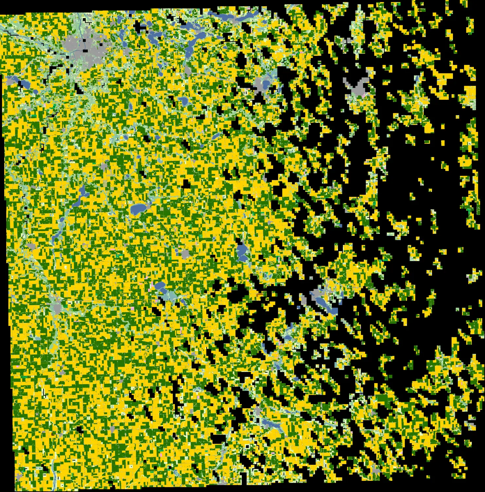
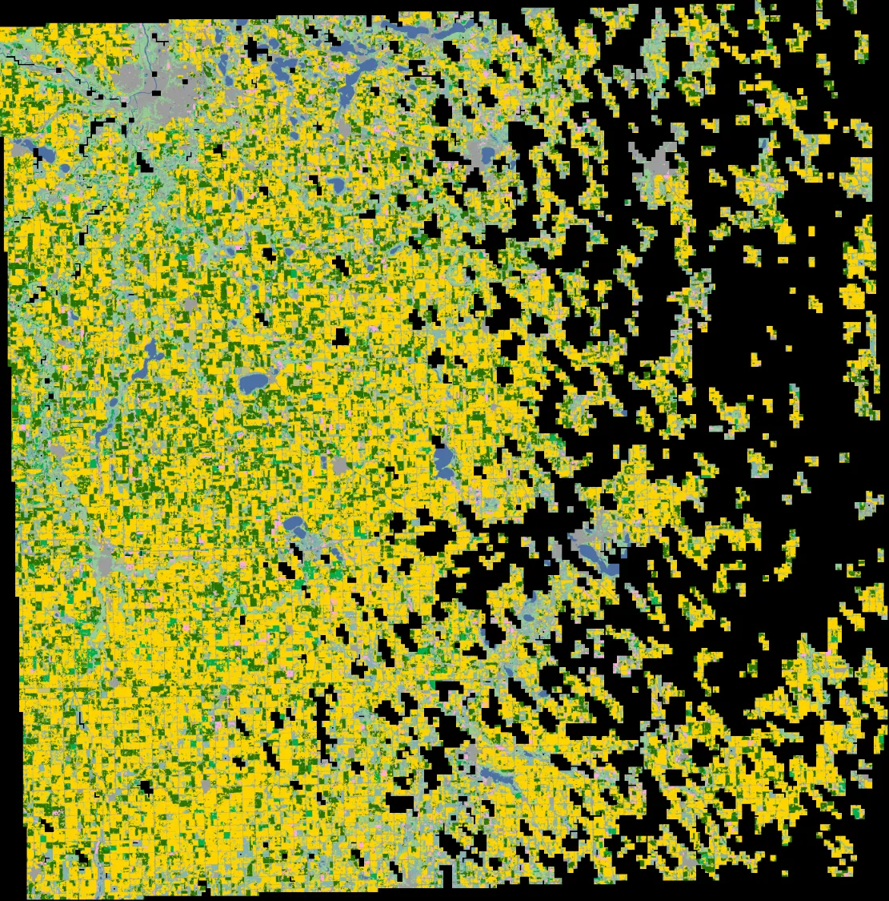
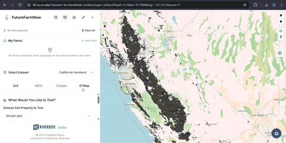
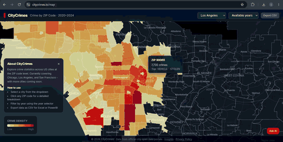
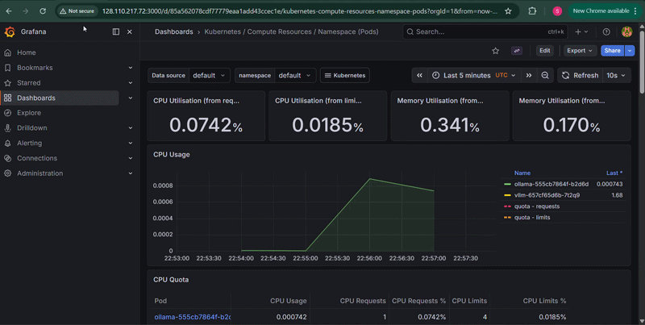
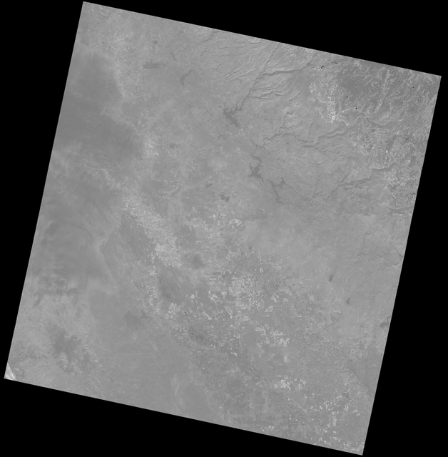

ABOUT
I am a Computer Science graduate from the University of California, Riverside, where I completed my MS in March 2026. I work with Dr. Ahmed Eldawy in the Big Data Lab.
Before graduate school, I spent 2.5 years as a software engineer at LTIMindtree.
NEWS
- Aug 2026Paper accepted at ACM SIGSPATIAL 2026.
- Jul 2026FutureFarmNow team received the Silver Larry L. Sautter Award for Innovation at the UC Tech Awards 2026.
- Mar 2026Completed MS in Computer Science at UC Riverside.
- Sep 2025Joined the Big Data Lab at UCR as a graduate researcher.
- Jun 2025Joined the Big Data Lab at UCR as a student assistant, contributing to FutureFarmNow.
- Jan 2025Served as a grader for Artificial Intelligence (CS 205).
- Sep 2024Admitted to University of California, Riverside.
- Jun 2021Joined LTIMindtree as a software engineer.
PUBLICATIONS


We present a controlled benchmark that evaluates three models (Prithvi, SpectralGPT, and SatMAE) on multi-temporal crop segmentation and change detection across four U.S. states: Iowa, North Carolina, California, and Minnesota.
PROJECTS

FutureFarmNow
Collaborated with researchers and implemented the evapotranspiration (ET) feature for the USDA-NIFA-funded geospatial platform that turns satellite-based data into practical field decisions for California farmers and researchers.

CityCrimes.io
A platform for exploring 10.8M+ crime records with natural-language querying through an LLM-powered RAG pipeline (LLaMA-3.3-70B), with ~70 ms p50 latency.

LLM Serving Benchmark
Benchmarked vLLM, Ollama, and Ray Serve on a 3-node Kubernetes cluster, with inference latency and throughput monitored in Prometheus and Grafana.

Eaton Fire Satellite Analysis
An Earth observation workflow visualizing vegetation change after the 2025 Eaton Fire, with NDVI computed from Landsat 8/9 and rendered as time-series GIF and MP4 outputs.